Summary
Problem: given a photo of an aircraft, name its family (for example Boeing 737, Airbus A320, Cessna 172). This is fine-grained image classification: many families look alike, so small details decide the answer.
Approach: three ImageNet-pretrained CNNs (MobileNetV2, ResNet18, EfficientNet-B0) were fine-tuned on FGVC-Aircraft. The best on the validation set, EfficientNet-B0, was evaluated once on the untouched test set. Grad-CAM explains the predictions, and a deletion test checks that the heatmaps are meaningful.
Live demo: model predictions
Pick a test image or upload your own aircraft photo. The model runs in your browser (ONNX Runtime Web), so your image is never uploaded anywhere.
Uploaded photos are squashed to 224x224 and normalised exactly like the test images. Accuracy on photos from other cameras and angles can be lower than the 79.96% benchmark score.
Project links
- GitHub repository (code, dataset link, model weights): https://github.com/Muhammad-Ishtiaq-Haider/aircraft-family-gradcam
- Project report: YOUR_REPORT_URL
- Presentation (slides): YOUR_SLIDES_URL
- YouTube video (voiceover): YOUR_YOUTUBE_URL
- Dataset (official source): https://www.robots.ox.ac.uk/~vgg/data/fgvc-aircraft/
- Model weights: PyTorch (.pth), ONNX (.onnx), labels.json
Dataset details
- Name: FGVC-Aircraft (release 2013b) by Maji, Rahtu, Kannala, Blaschko and Vedaldi, Oxford Visual Geometry Group (arXiv:1306.5151). A secondary, public benchmark dataset.
- Labels: family level, 70 classes.
- Split: official, unchanged: 3,334 train / 3,333 validation / 3,333 test images (10,000 in total, about 48 training images per family on average; family sizes vary).
- Preprocessing: a 20-pixel copyright banner at the bottom of every image is cropped away, then images are resized to 224x224 and normalised with ImageNet mean and standard deviation.
- Augmentation (training only): random resized crop (scale 0.5 to 1.0), horizontal flip, light colour jitter.
- Access: downloaded automatically by
torchvision.datasets.FGVCAircraft. It is not stored in the repository (about 2.6 GB). For non-commercial research and education only.
Class balance
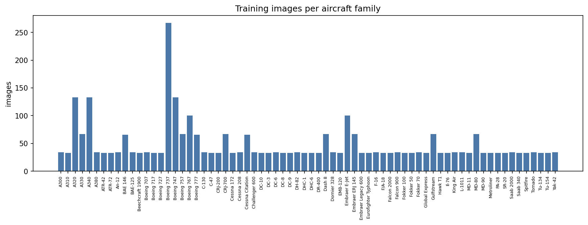
Code and model details
| Item | Detail |
|---|---|
| Framework | PyTorch 2.11 and torchvision 0.26, trained on Google Colab (Tesla T4 GPU) |
| Models compared | MobileNetV2, ResNet18, EfficientNet-B0 (ImageNet-pretrained, all layers fine-tuned) |
| Optimiser and schedule | AdamW (max lr 5e-4, weight decay 1e-2), OneCycleLR |
| Loss | cross-entropy with label smoothing 0.1 |
| Training | 20 epochs, batch size 64, mixed precision, seed 42 |
| Model selection | highest validation accuracy; the test set was used once, afterwards |
| Deployment | weights exported to ONNX (matches PyTorch on 100 of 100 test images) and run in the browser by this page |
Run it yourself
git clone https://github.com/Muhammad-Ishtiaq-Haider/aircraft-family-gradcam cd aircraft-family-gradcam pip install -r requirements.txt python predict.py samples/ python gradcam.py samples/ --out gradcam_out
The full pipeline (data, training, evaluation, Grad-CAM, export) is in the notebook notebook/Aircraft_Family_Recognition_GradCAM.ipynb, saved with its outputs.
Results (test set, 3,333 images)
| Model | Val acc | Test top-1 | Test top-5 | Macro F1 | Params (M) | Train time |
|---|---|---|---|---|---|---|
| MobileNetV2 | 77.17% | 78.04% | 93.52% | 76.42% | 2.31 | 26.3 min |
| ResNet18 | 76.36% | 77.02% | 91.84% | 75.16% | 11.21 | 25.5 min |
| EfficientNet-B0 (selected) | 78.64% | 79.96% | 94.06% | 78.21% | 4.10 | 26.1 min |
Approximate 95% confidence interval for the selected model's test accuracy: 78.6% to 81.3% (normal approximation, n = 3,333). One training run per model, so differences of about one point are within noise.
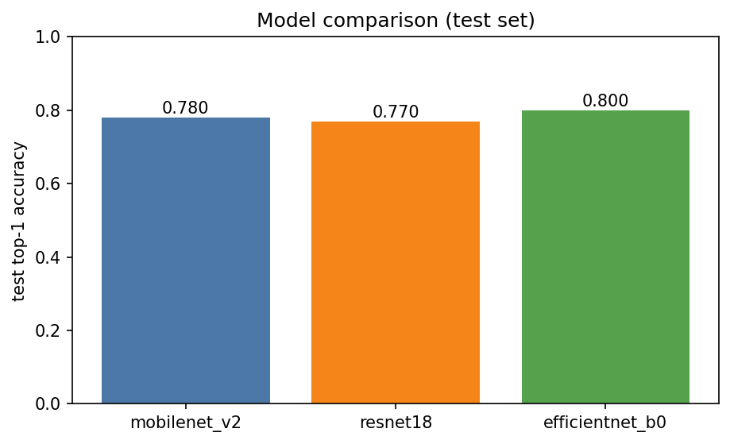
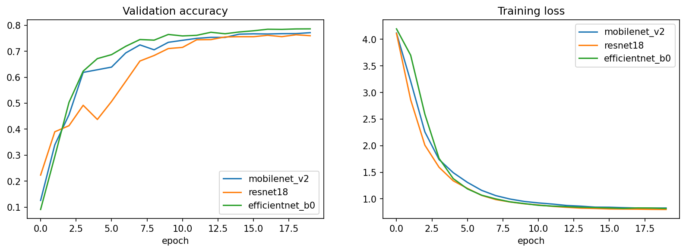
Where the model makes mistakes
| True family | Predicted | Count |
|---|---|---|
| C-47 | DC-3 | 16 |
| Boeing 777 | Boeing 767 | 11 |
| A320 | A330 | 9 |
| MD-90 | MD-80 | 7 |
| MD-80 | MD-90 | 7 |
| MD-11 | DC-10 | 7 |
| Boeing 707 | Boeing 747 | 7 |
| A320 | Boeing 737 | 7 |
| Fokker 50 | Dash 8 | 6 |
| Embraer E-Jet | Boeing 737 | 6 |
The confusions are between visually or historically close designs. C-47 versus DC-3 is largely a labelling ambiguity, because the C-47 is the military version of the DC-3.
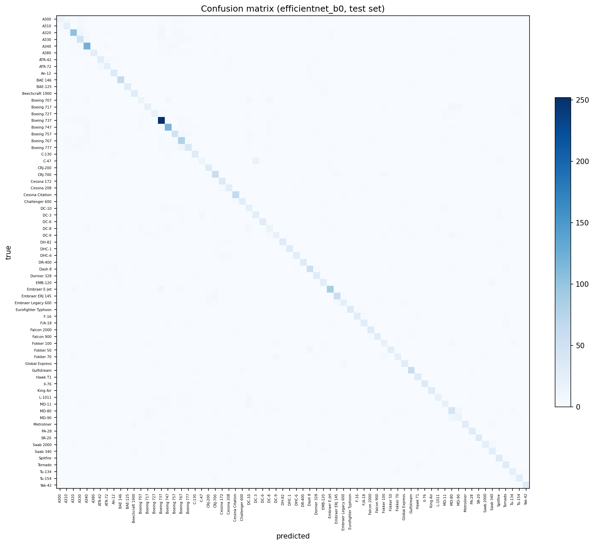
results.json holds every number; classification_report.txt has per-class precision, recall and F1.
Explainability with Grad-CAM
Grad-CAM highlights the image regions that most increased the score of the predicted family, using the last convolutional block of EfficientNet-B0. In the examples the heat concentrates on the aircraft body (fuselage, wings, engines) and largely ignores sky and ground. The maps are coarse (7x7 resolution) and tend to be centre-weighted, so they show where the model looks, not which exact part it uses.
Deletion test (300 correctly classified test images): hiding the 25% of pixels Grad-CAM marks as most important lowered the true-class probability by 0.738 on average (from 0.771), while hiding the 25% marked least important lowered it by only 0.007. The most-important region hurt more in 300 of 300 images. This is a sanity check, not a proof, because masking also changes the image statistics.
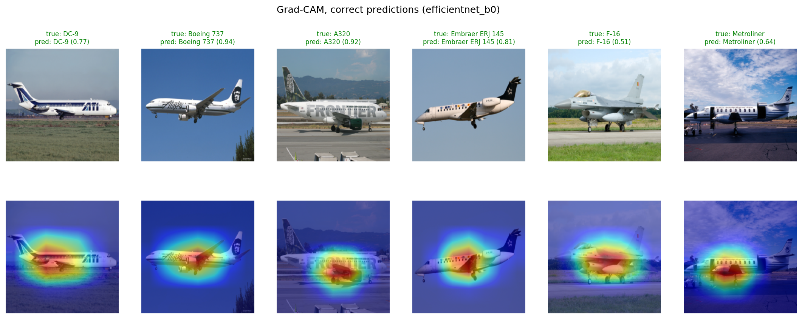
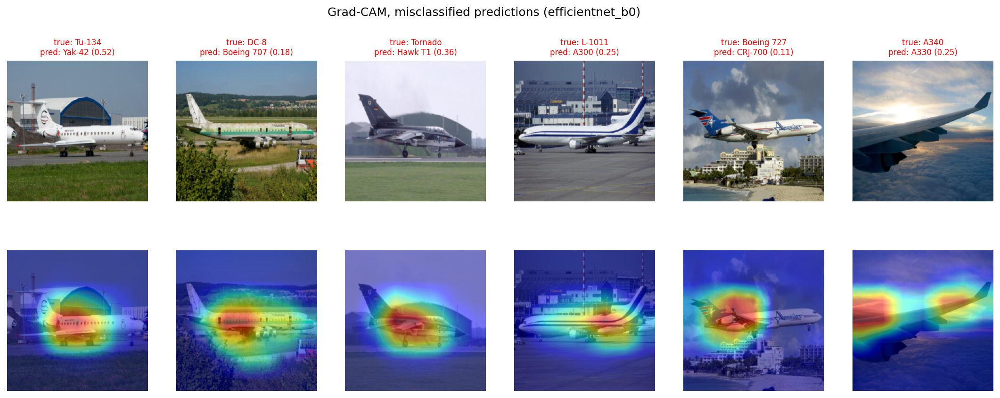
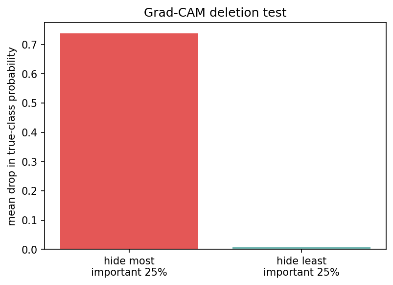
More Grad-CAM examples
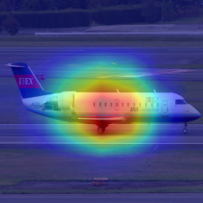
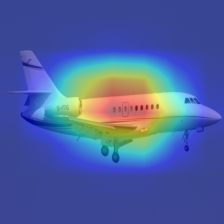
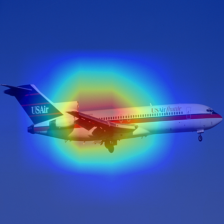
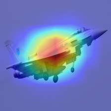
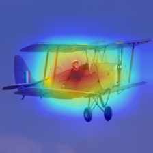
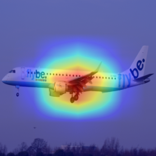
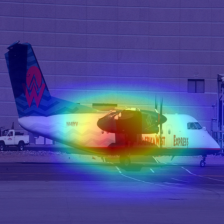
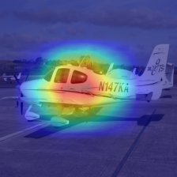
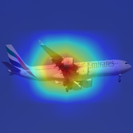
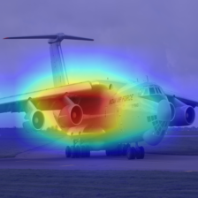
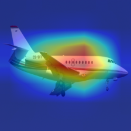
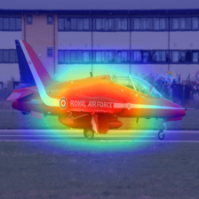
Limitations
- One training run with one seed; small differences between models are within noise.
- All reported numbers come from the FGVC-Aircraft test split. Photos from other cameras, angles or lighting may give lower accuracy, and the model was not tested on outside images.
- Family-level labels group several variants; near-identical designs (777 vs 767, MD-80 vs MD-90) remain the main error source.
- Images are squashed to 224x224, which distorts wide aircraft photos; a higher resolution would likely help.
References
- S. Maji, E. Rahtu, J. Kannala, M. Blaschko, A. Vedaldi. Fine-Grained Visual Classification of Aircraft. arXiv:1306.5151, 2013.
- R. Selvaraju et al. Grad-CAM: Visual Explanations from Deep Networks via Gradient-based Localization. ICCV 2017.
- M. Tan, Q. Le. EfficientNet: Rethinking Model Scaling for Convolutional Neural Networks. ICML 2019.
- M. Sandler et al. MobileNetV2: Inverted Residuals and Linear Bottlenecks. CVPR 2018.
- K. He et al. Deep Residual Learning for Image Recognition. CVPR 2016.